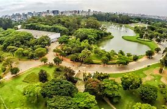

Passear na Avenida Paulista!
Um dos principais centros financeiros da cidade, a avenida Paulista também possui diversas opções de entretenimento. Endereço do Museu de Arte em São Paulo,MASP,Teatro Gazeta e muitos outros, a região é de fácil acesso graças as diversas linhas de ônibus que cruzam a avenida e a linha de metrô que passa por baixo dela.
A Avenida Paulista sempre é um assunto. O que será que estão falando a respeito no Twitter?
Os bares da Vila Madalena
Depois de um dia de trabalho, nada melhor do que um bom chopp, um petisco e uma conversa em uma mesa de bar. Opções de sobra na região das ruas Aspicuelta, Fradique Coutinho e Wisard.
Veja quais os melhores bares e restaurantes da região no Guia da semana em São Paulo.
O parque do Ibirapuera

Um dos cartões postais da cidade, o parque dispõe de mais de 1,5 km{^2} de área verde, lagos artificiais e psitas de cooper e ciclismo. E se isso não fosse o suficiente, o parque costuma ser palco de diversos eventos culturais ao longo do ano.
Veja no mapa região do parque.